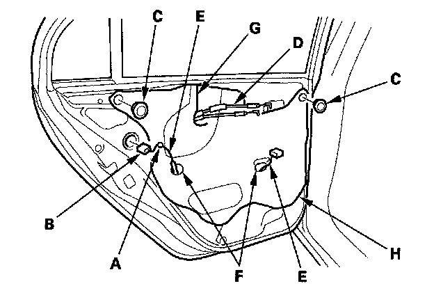
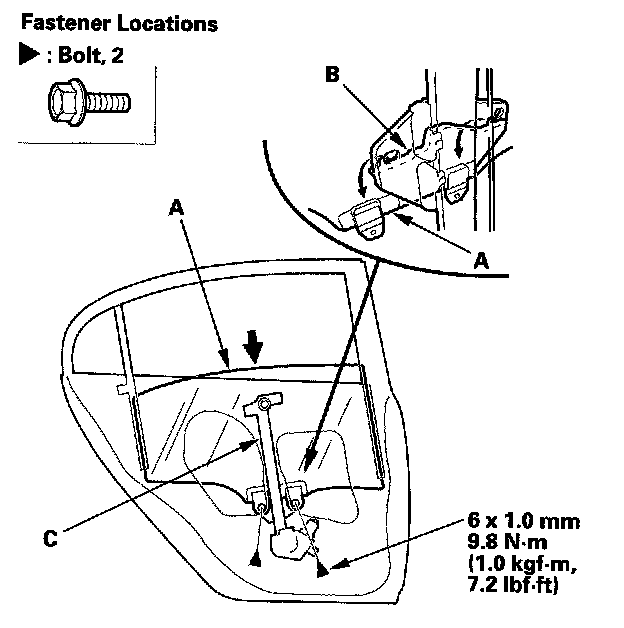
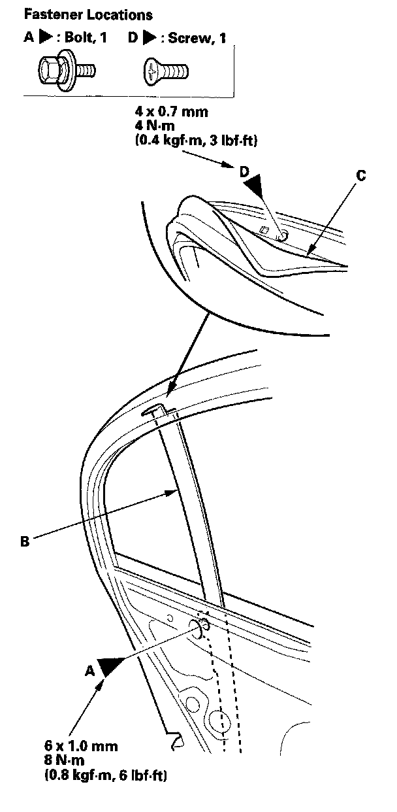
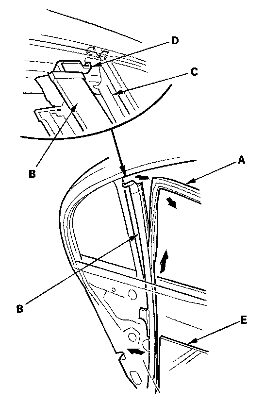
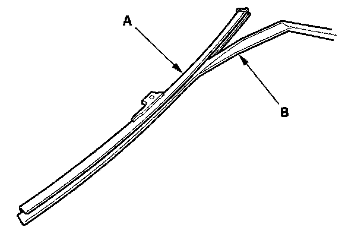
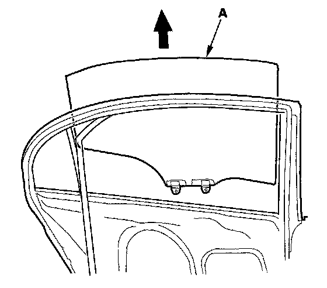
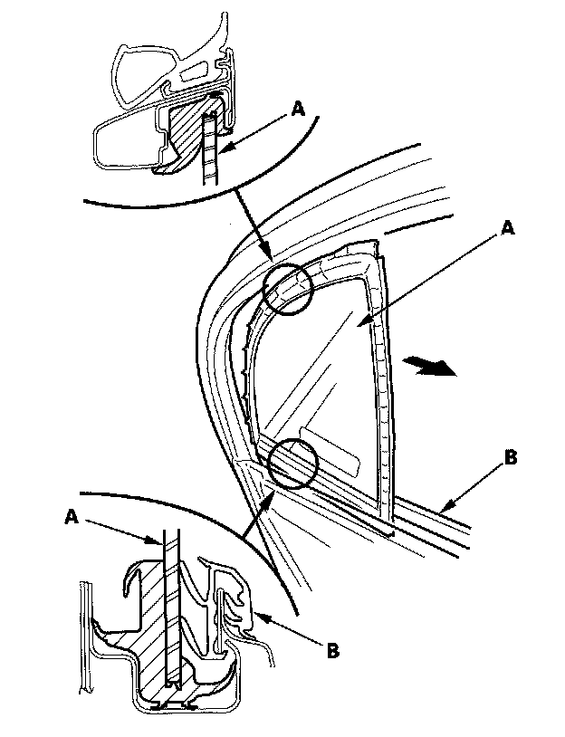
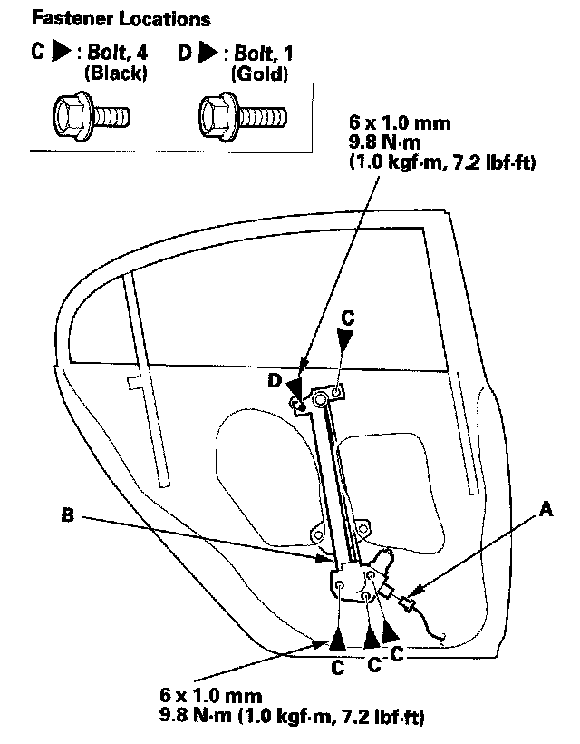
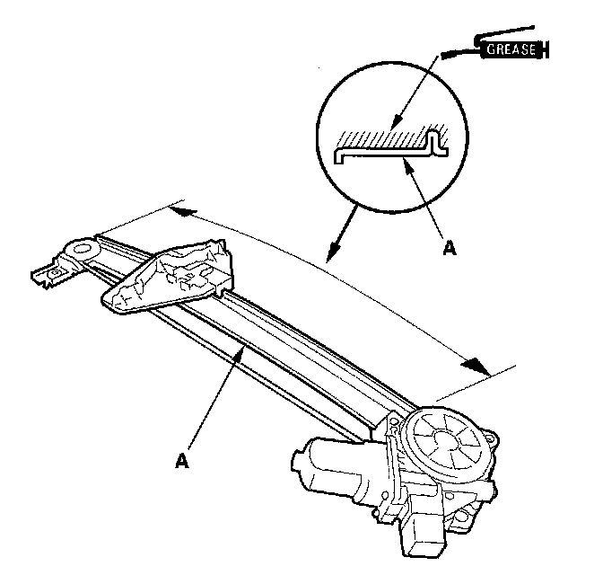

Rear Door Window Regulator: Service and Repair
Rear Door Glass and Regulator Replacement4-door
NOTE: Put on gloves to protect your hands.
1. Remove the door panel.

2. Detach the harness clip (A), and disconnect the power door lock actuator connector (B). Remove the plug caps (C).
3. Pass the cable (D) and the harnesses (E) through the holes (F) and slit (G) in the plastic cover (H), then remove it.

4. Carefully move the glass (A) until you can see the bolts, then remove them. Release the glass from the holder (B), then remove it from the regulator (C), and carefully lower the glass. Take care not to drop the glass inside the door.

5. Remove the bolt (A) from the rear lower channel (B). Pull the glass run channel (C) away as needed, and remove the screw (D).

6. Pull the glass run channel (A) away as needed. Pull the rear lower channel (B) forward from the quarter glass seal (C) then release the upper hook (D) from the door. Remove the rear lower channel from the rear door glass (E), then pull the channel up to remove it.

7. Remove the rear lower channel (A) from the glass run channel (B).

8. Carefully remove the glass (A) out through the window slot. Take care not to drop the glass inside the door.

9. Remove the quarter glass (A). Take care not to damage the outer weatherstrip (B).

10. Disconnect the connector (A) from the regulator (B).
11. Remove the bolts (C), and loosen the bolt (D), then remove the regulator through the hole in the door.

12. Grease all the sliding surfaces of the regulator (A) where shown.
13. Install the glass and regulator in the reverse order of removal, and note these items:
- Roll the glass up and down to see if it moves freely without binding.
- Make sure that there is no clearance between the glass and glass run channel when the glass is closed.
- Adjust the position of the glass as necessary.
- When reinstalling the door panel, make sure the plastic cover is installed properly and sealed around its outside perimeter to seal out water.
- Check for water leaks.